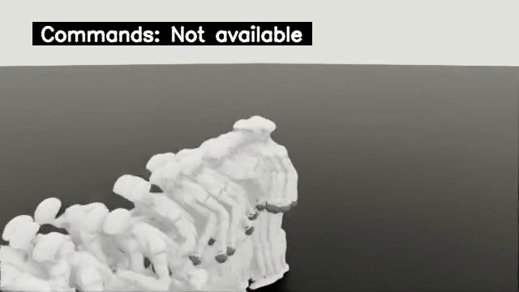
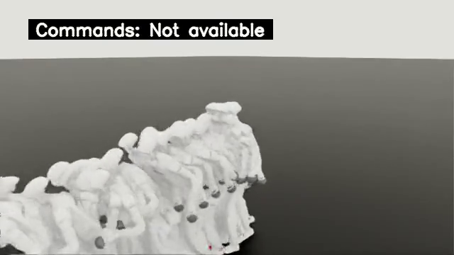

eval-teacher-locomotion

最终checkpoint 19999；失败重置 397，timeout 0，clip结束事件 0。
展示最长的quality绑定原片（13.2秒），按时长确定性选取；不表示最佳或典型表现。
原始quality.json · 原始manifest · CPU核对报告
全部11段原视频（9段quality绑定）
eval-teacher-low-step

最终checkpoint 19999；失败重置 860，timeout 0，clip结束事件 61。
展示最长的quality绑定原片（4.54秒），按时长确定性选取；不表示最佳或典型表现。
原始quality.json · 原始manifest · CPU核对报告
全部22段原视频（20段quality绑定）
eval-teacher-high-step

最终checkpoint 19999；失败重置 1766，timeout 0，clip结束事件 0。
展示最长的quality绑定原片（2.24秒），按时长确定性选取；不表示最佳或典型表现。
原始quality.json · 原始manifest · CPU核对报告
全部32段原视频（30段quality绑定）
eval-teacher-low-climb-76

最终checkpoint 19999；失败重置 815，timeout 0，clip结束事件 0。
展示最长的quality绑定原片（5.14秒），按时长确定性选取；不表示最佳或典型表现。
原始quality.json · 原始manifest · CPU核对报告
全部19段原视频（17段quality绑定）
eval-teacher-high-climb-76

最终checkpoint 19999；失败重置 1707，timeout 0，clip结束事件 0。
展示最长的quality绑定原片（2.3秒），按时长确定性选取；不表示最佳或典型表现。
原始quality.json · 原始manifest · CPU核对报告
全部32段原视频（30段quality绑定）
eval-student-pure

最终checkpoint 9999；失败重置 2547，timeout 0，clip结束事件 569。
展示最长的quality绑定原片（6.46秒），按时长确定性选取；不表示最佳或典型表现。
原始quality.json · 原始manifest · CPU核对报告
全部44段原视频（42段quality绑定）